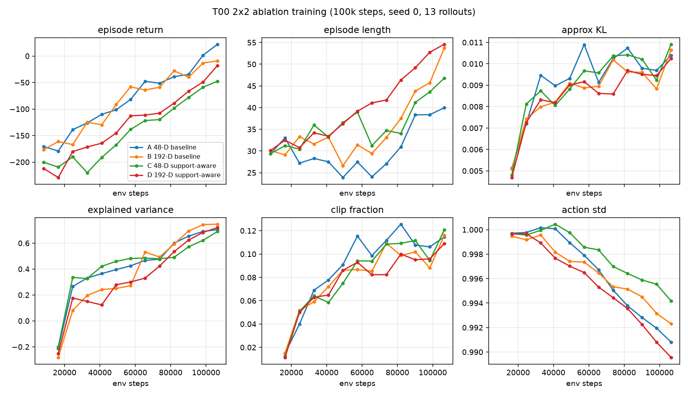
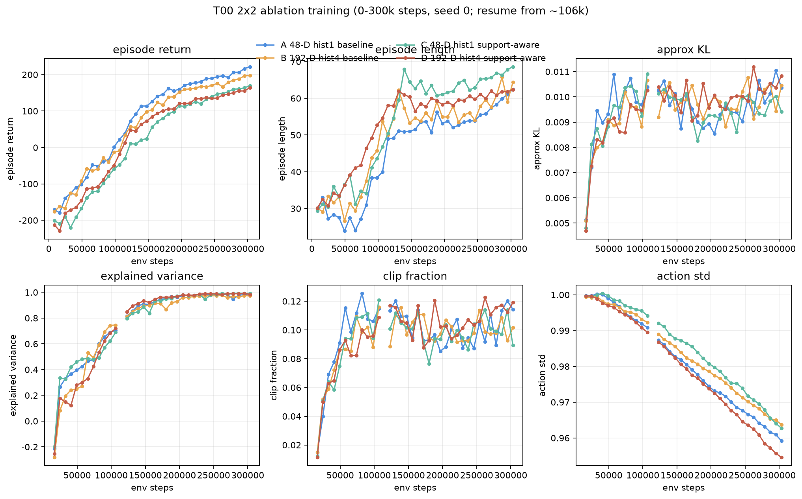

A
hist1 + baseline
48-D single frame. Ungated DexScrew rotation. Control.
T00 2×2 ablation of observation history × support-aware reward on bottom tip-connect, s=400, seed 0. History stacking shows an early online-length signal; collapse and eval metrics are still unsolved.
Only obs_history_len ∈ {1,4} and support-aware reward on/off change. Physics, PPO, and tilt-kill stay fixed.
48-D single frame. Ungated DexScrew rotation. Control.
192-D stack, newest-first, reset-repeat. Same reward as A.
48-D. Rotation gated ×0 / ×0.1 / ×1 plus λ=0.5 wobble.
192-D stack plus the same support-aware terms as C.
约 10 万步时，B、D 的回合长度已经明显高于 A、C，说明 4 帧观测历史已经有效。
At the 100k cutoff, B and D last longer than A and C, suggesting 4-frame observation history is already effective — before full convergence.

图 1 · 在线 Monitor，13 个 rollout，截止 106,496 步。长度面板上 B（橙）与 D（红）已经高于 A（蓝）与 C（绿）。
Fig. 1 · Online Monitor, 13 rollouts, cutoff 106,496 steps. Length panel: B (orange) and D (red) already sit above A (blue) and C (green).
Last metrics.csv row (step 106,496). Episode return / length come from SB3 Monitor. Extra unlabeled columns are approx_kl, clip_fraction, clip_range, entropy_loss, explained_variance, …, std, value_loss.
| Cond | Setup | Return | Length | KL | EV | Clip frac | Action std |
|---|---|---|---|---|---|---|---|
| A | 48-D hist1, baseline | +22.1 | 40.0 | 0.0104 | 0.704 | 0.115 | 0.991 |
| B | 192-D hist4, baseline | −8.9 | 53.7 | 0.0107 | 0.746 | 0.116 | 0.992 |
| C | 48-D hist1, support-aware | −47.5 | 46.8 | 0.0109 | 0.690 | 0.121 | 0.994 |
| D | 192-D hist4, support-aware | −17.9 | 54.6 | 0.0103 | 0.720 | 0.109 | 0.990 |
在约 10 万步截断时，带 4 帧历史的 B、D 在线回合长度（53.7 / 54.6）已经明显高于无历史的 A、C（40.0 / 46.8）。这说明在完全收敛之前，观测历史堆叠就已经有效。这还不是任务成功：评测成功率为 0，且长度不等于接触恢复。
At the 100k cutoff, B (192-D hist4, baseline reward) and D (192-D hist4, support-aware) already last longer online than A/C (48-D hist1). History stacking has an early length signal before convergence. This does not mean the task is solved.
续训到累计约 30 万步后，B/D 相对 A/C 的回合长度优势已经收窄，几乎消失。C 反而最长。回报仍在上升，尚未平台。
By ~300k the early B/D length lead narrowed and largely disappeared. C is now longest. Returns are still rising; this is not a plateau and not task success.

图 2 · 合并 0–106k 与续训 metrics，截到 303,104 步。长度面板上四条线已经挤在 62–69 步；C（绿）最高，B 只比 A 高约 2 步，D ≈ A。
Fig. 2 · Merged 0–106k + resume metrics, cutoff 303,104. Lengths sit in a 62–69 band. C (green) is highest; B is only ~2 steps above A; D ≈ A.
| Cond | Setup | Return 300k | Length 300k | KL | EV | Length 100k | Δ length |
|---|---|---|---|---|---|---|---|
| A | 48-D hist1, baseline | +221.8 | 62.4 | 0.0104 | 0.987 | 40.0 | +22.4 |
| B | 192-D hist4, baseline | +197.9 | 64.4 | 0.0105 | 0.975 | 53.7 | +10.6 |
| C | 48-D hist1, support-aware | +169.6 | 68.6 | 0.0094 | 0.992 | 46.8 | +21.8 |
| D | 192-D hist4, support-aware | +164.1 | 62.4 | 0.0108 | 0.984 | 54.6 | +7.8 |
100k 时 B/D 更长，说明 4 帧历史有早期在线长度信号。到 300k，这个优势收窄：B 64.4 vs A 62.4，D 62.4 vs C 68.6。C（无历史 + support-aware）现在最长。回报仍在爬（A +222，B +198），EV 已接近 0.98，但回合长度和回报都还没平台。这不是任务解决，也没有重跑评测。
The 100k B/D length advantage narrowed and largely reversed as a hist4 signal. At step 303,104: A 62.4, B 64.4, C 68.6, D 62.4. C (hist1 + support-aware) is now longest. Returns are still rising; EV is near 0.98 and KL stays ~0.01, so optimization looks stable but the length curves are not a plateau. Episode length still ≠ contact recovery. Eval was not re-run.
New run dirs 20260914-1712-t00-ablation-{A,B,C,D}-continue300k-seed0 loaded the ~106k zip + VecNormalize. SB3 2.9 reset_num_timesteps=False adds the current counter, so jobs actually continued to ~410k. The figure and table above are sliced at 303,104 as requested.
四个续训策略的确定性回放。这是倾倒演示，不是任务成功。评测仍是 80/80 axis_tilt。
Deterministic rollouts of the four continue policies at saved step 306432. Representative tilt-collapse demos, not a solved-task claim. Overlay: run id, checkpoint step, seed, return, success, length, terminate reason, n_contact.
图 3 · A/B/C/D 2×2，seed 6（与 tilt-collapse 时间线同一 seed）。四条都在约 61–65 步死于 axis_tilt，终态 n=0。
Fig. 3 · A/B/C/D grid, seed 6 (same seed as the tilt-collapse timeline). All four die on axis_tilt at 61–65 steps with n=0.
Also: grid seed 10000 · A B C D (seed 6) · all clips. Canonical: runs/20260914-1748-t00-ablation-videos-300k/.
四个 300k 策略在 seed 6 上的逐步接触 / 倾角时间线。这不是任务成功。
Per-step contact / tilt timelines for the four 300k continue policies on seed 6 (same seed as the transfer collapse page). All four die axis_tilt. Support-aware C/D do not change the collapse narrative.
| Cond | Setup | 2+ → ≤1 | n=0 | Tilt-kill | Loss→kill | Recontact |
|---|---|---|---|---|---|---|
| A | 48-D hist1, baseline | 49 | 57 | 65 | 16 | no |
| B | 192-D hist4, baseline | 43 | 54 | 61 | 18 | no |
| C | 48-D hist1, support-aware | 50 | 60 | 65 | 15 | no |
| D | 192-D hist4, support-aware | 53 | 57 | 62 | 9 | no |
Open the tabbed scrubber: t00-ablation-demos-300k/ (step slider, contact vs tilt, frame strip). Canonical traces: runs/20260914-1805-t00-ablation-demos-300k/.
这两页都按现有 GitHub Pages / docs/demo.html 的深色视觉语言写成，之后可以直接挂进公开项目页。
Both pages match the existing GitHub Pages / docs/demo.html visual language so they can be copied into the public project page later. Do not treat either as a solved-task claim.
This page: docs/pages/t00-ablation-history.html. 100k / 300k curves, 2×2 legend, bilingual captions. Relative assets sit beside the HTML.
Demo page for DBG-20260823-006: 2-contact at 29 → 1 at 30 → 0 at 34 → eval axis_tilt at 40. Canonical original stays under runs/; inheritable copy is t00-seed6-tilt-collapse/.
Tabbed comparison of the four continue policies on seed 6. Same scrubber language as the transfer timeline. Inheritable copy: t00-ablation-demos-300k/.